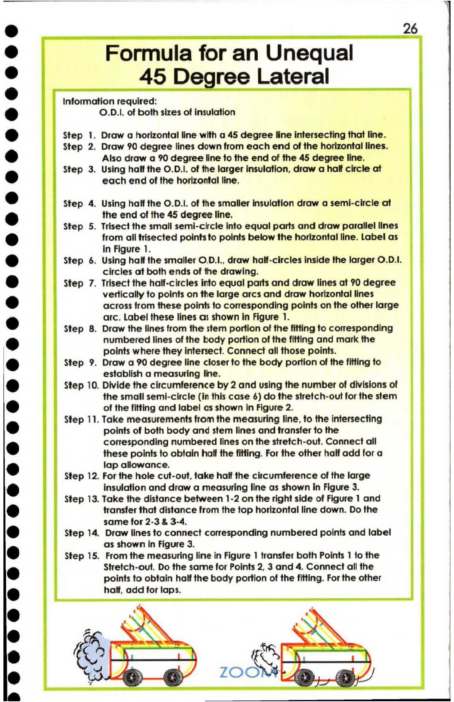

26. Formula for an Unequal 45 Degree Lateral

s 2 Cf
* Formula for an Unequal |
e 45 Degree Lateral
* Information required:
@ O.D.I. of both sizes of insulation
®& Step 1. Draw a horizontal line with a 45 degree line intersecting that line.
Step 2. Draw 90 degree lines down from each end of the horizontal lines.
@ Also draw a 90 degree line to the end of the 45 degree line.
Step 3. Using half the O.D.I. of the larger insulation, draw a half circle at
@ each end of the horizontal line,
& Step 4. Using half the O.D.I. of the smaller insulation draw a semi-circle at
@ the end of the 45 degree line.
Step 5. Trisect the small semi-circle into equal parts and draw parallel lines
[ ) from all trisected points to points below the horizontal line. Label as
in Figure 1.
® Step 6. Using half the smaller O.D.I., draw half-circles inside the larger O.D.1.
circles at both ends of the drawing.
) Step 7. Trisect the half-circles into equal parts and draw lines at 90 degree
vertically to points on the large arcs and draw horizontal lines
& across from these points to corresponding points on the other large
* arc. Label these lines as shown in Figure 1.
Step 8. Draw the lines from the stem portion of the fitting to comesponding
@ numbered lines of the body portion of the fitting and mark the
points where they intersect. Connect all those points.
@ Step 9. Draw a 90 degree line closer to the body portion of the fitting to
establish a measuring line.
r ) Step 10. Divide the circumference by 2 and using the number of divisions of
the small semi-circle (in this case 6) do the stretch-out for the stem
@ of the fitting and label os shown in Figure 2.
Step 11. Take measurements from the measuring line, to the intersecting
@ points of both body and stem lines and transter to the
@ corresponding numbered lines on the stretch-out. Connect all
these points to obtain half the fitting. For the other half add for a
@ lap allowance.
Step 12. For the hole cut-out, take half the circumference of the large
& insulation and draw a measuring line as shown in Figure 3.
Step 13. Take the distance between 1-2 on the right side of Figure 1 and
e@ transfer that distance from the top horizontal line down. Do the |
same for 2-3 & 3-4. |
@ Step 14. Draw lines to connect corresponding numbered points and label
as shown in Figure 3.
@ Step 15. From the measuring line in Figure 1 transfer both Points 1 to the |
@ Stretch-out. Do the same for Points 2, 3 and 4. Connect all the |
points to obtain half the body portion of the fitting. For the other |
e half, add for laps.
@ F |
12
4 - Ba |
e hn! & ik ro" |
e tlie @/ 100M ae
¥ - PI ee ]
——— ee Eel